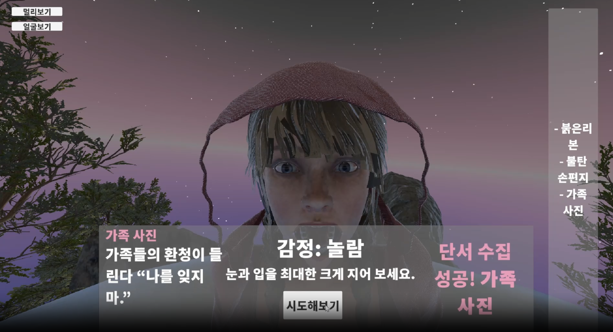
Tales in Fragments
감정 인식 기반 인터랙티브 스토리 게임. 3인칭 시점으로 맵을 탐색하며, 플레이어의 표정을 인식해 감정에 맞는 선택지를 자동으로 매핑하는 인터랙션 시스템을 구현 (예: 찡그린 표정 → '분노' 선택지로 오브젝트 수집). 2인 팀에서 유니티 엔진 내 전 작업과 클라이언트 개발을 담당, 개발 기간 8주. 2025 한국디지털콘텐츠학회 논문경진대회 동상 수상작.
일단 만들어서 확인하고, 확인된 것만 자신 있게 말하는 개발자입니다.

감정 인식 기반 인터랙티브 스토리 게임. 3인칭 시점으로 맵을 탐색하며, 플레이어의 표정을 인식해 감정에 맞는 선택지를 자동으로 매핑하는 인터랙션 시스템을 구현 (예: 찡그린 표정 → '분노' 선택지로 오브젝트 수집). 2인 팀에서 유니티 엔진 내 전 작업과 클라이언트 개발을 담당, 개발 기간 8주. 2025 한국디지털콘텐츠학회 논문경진대회 동상 수상작.
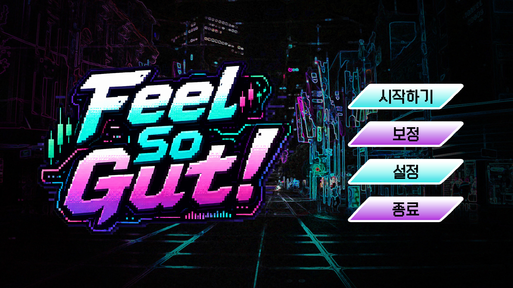
한국 무속 신앙을 소재로 한 리듬게임. 사이버펑크와 조선시대 무당 컨셉을 결합해, 각자의 사연을 가진 귀신을 리듬 액션으로 퇴치한다. 기획·개발·아트 3인 팀 '삼유스튜디오'에서 클라이언트 개발 담당. 충남콘텐츠진흥원 2026 미래 창작자 성장 과정 선발작으로 현재 개발 중이며, 2026년 9월 스토브인디 출시와 11월 지스타(G-STAR) 출품을 앞두고 있음.
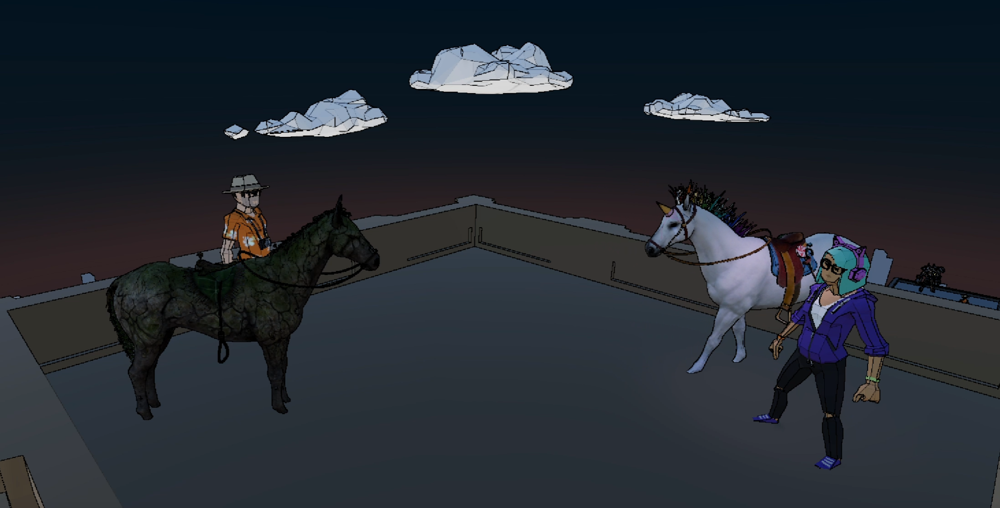
시네마틱 턴제 RPG. 3인 팀에서 컷신 제작, 파이프라인·기술 지원, 기획 문서 정리를 담당. 시네머신(Cinemachine) 기반 컷신 제작에 사운드 AI 솔루션을 결합해 연출을 구현. 학교 프로젝트로 시작해 공모전까지 이어간 프로젝트로, 개발 기간 10주.
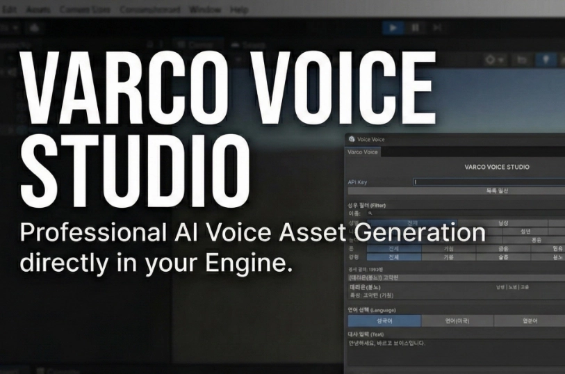
NC AI의 VARCO TTS API를 유니티 에디터에 통합한 도구. 성우 검색부터 대사 생성, 파일 저장까지 엔진 내부에서 한 번에 처리할 수 있는 전용 에디터 윈도우로 구현. Seed 고정으로 생성 결과의 일관성을 확보했고, UnityWebRequest 기반 비동기 API 통신과 PasswordField로 API 키 보호까지 구현. 개인 학습 및 포트폴리오 목적의 베타 버전 (유니티 에셋스토어 심사 진행 중).
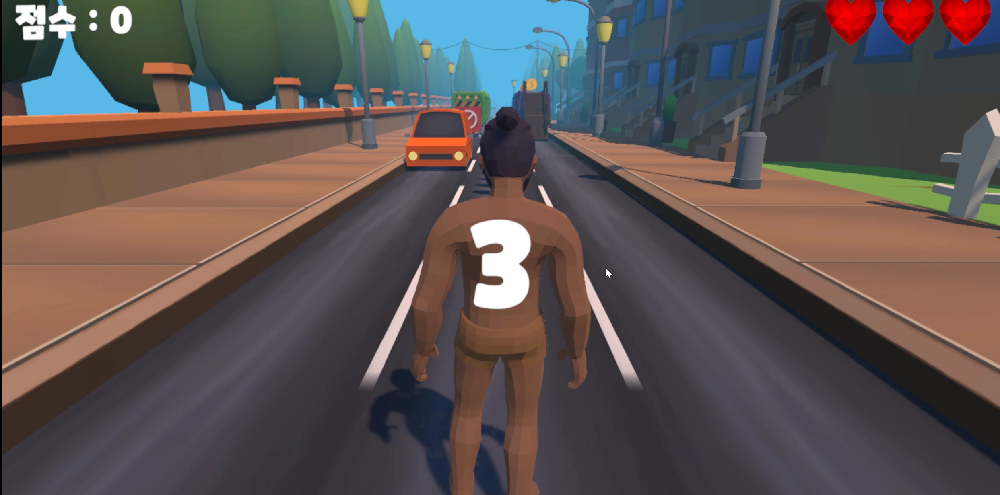
3D 러닝 액션 게임. 클라이언트 전체와 로컬 서버(계정 생성/로그인, 점수 데이터베이스 저장·불러오기)를 혼자 개발. 장애물 피격 시 HP 감소, 속도 업, 점수 시스템, 쉴드 아이템, 게임오버·랭크 테이블 기능 구현. 1인 개발, 개발 기간 2주.
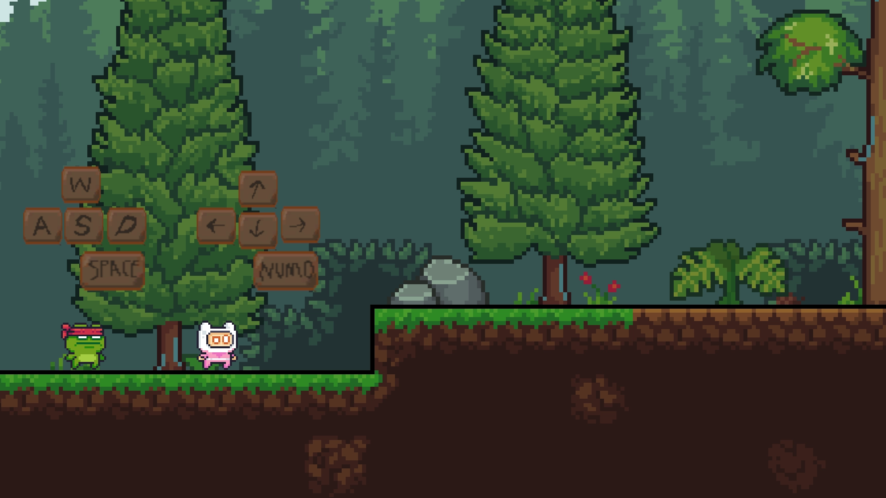
2D 플랫포머. 2인 팀에서 클라이언트 개발과 타일맵 디자인, 기믹 기획을 담당. 엘리베이터, 회전하는 통나무, 작용-반작용 트램펄린 발판 등 기믹과 일시정지 UI를 구현. 개발 기간 1개월.
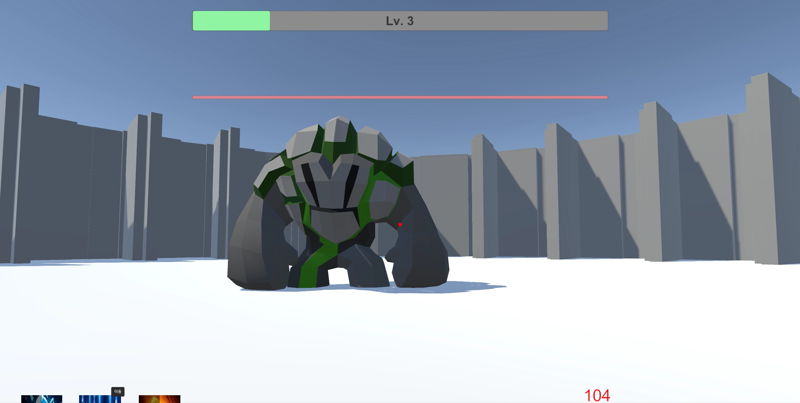
1인칭 슈팅 게임. 3인 팀에서 플레이어 이동, 스킬, 스탯 시스템 구현을 담당. Q키로 변신 시 플레이어 모델과 스킬 구성이 전환되고, 레벨업에 따라 스탯 수치가 변화하며 스킬 쿨타임을 UI로 시각화. 개발 기간 2주, 2024 SCHU AI·SW Festival 학과예선전 장려상 수상작.
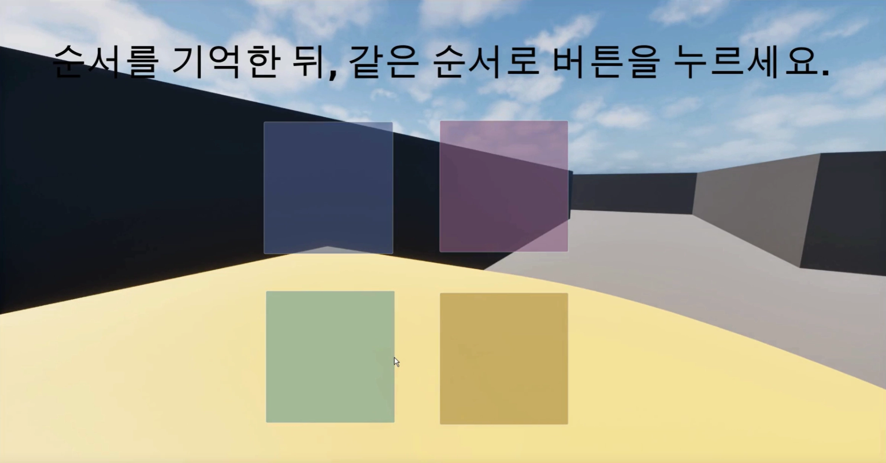
언리얼엔진5 블루프린트 기반 미로 탈출 게임. 순서를 기억해 같은 순서로 버튼을 누르는 기믹 등 클라이언트 개발 전체를 1인으로 담당. 개발 기간 1주.
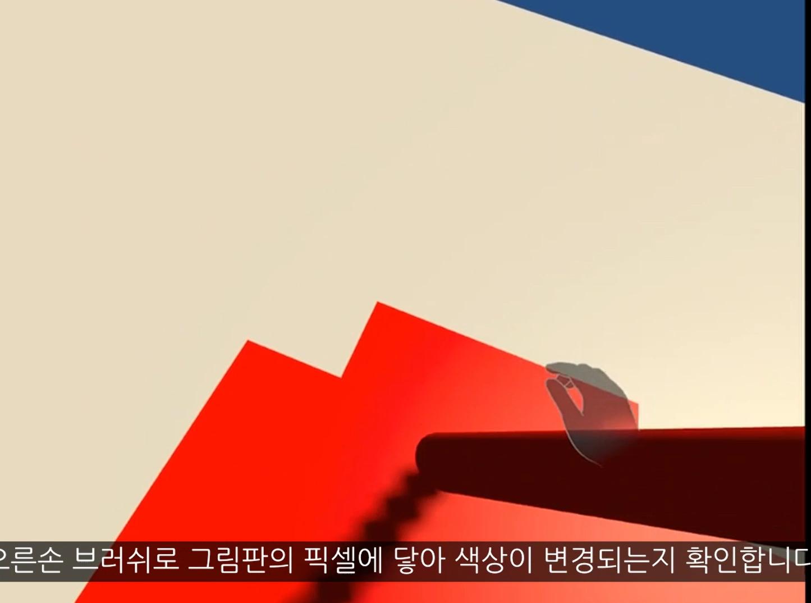
Meta Quest 3 SDK 세팅부터 핸드 트래킹, 안드로이드 빌드까지 다루는 자체 제작 튜토리얼 영상. 핸드 트래킹 기반 핀치·브러쉬 제스처로 픽셀 색상을 바꾸는 VR 그림판을 직접 구현하며 개발 과정을 강의 형태로 정리.
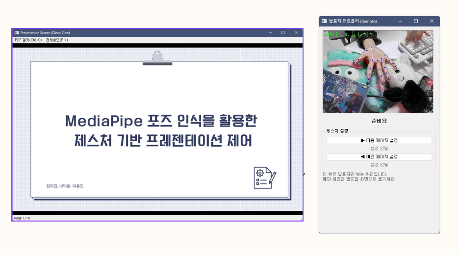
MediaPipe Hands로 손 제스처를 인식해 PDF 프레젠테이션을 넘기는 웹 도구. OpenCV + MediaPipe Hands, JavaScript / CSS3 / HTML5로 구현했고, 발표자용 컨트롤러 화면과 청중용 클린 화면을 분리해 실제 발표 환경에서 바로 쓸 수 있게 만들었다.
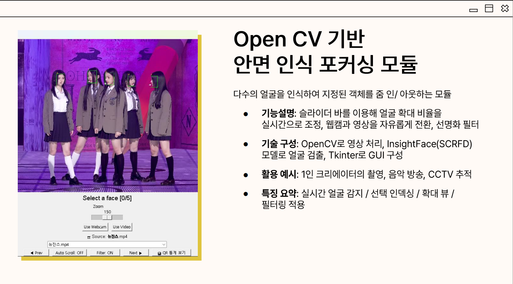
다수의 얼굴을 인식해 지정된 대상을 줌 인/아웃하는 모듈. OpenCV로 영상을 처리하고 InsightFace(SCRFD) 모델로 얼굴을 검출, Tkinter로 GUI를 구성. 슬라이더로 확대 비율을 실시간 조정하고 웹캠·영상 소스를 자유롭게 전환할 수 있으며, 1인 크리에이터 촬영이나 CCTV 추적 같은 용도를 염두에 두고 설계.
SBS 예능 '작렬정신통일'의 두뇌의 벽 코너를 모티브로 한 VR 콘텐츠. VR 핸드 포인트로 플레이어의 포즈를 인식해, 문제와 3개 선택지 중 정답에 해당하는 구멍에 맞는 포즈를 취하면 통과하는 방식. 퀴즈 문제를 사용자가 직접 커스터마이징할 수 있도록 퀴즈 메이커와 JSON 기반 퀴즈 데이터 내보내기 기능을 담당.
흉부 X-ray 영상 분석 정확도 향상을 위한 영상처리 파이프라인 설계. Grayscale 변환, CLAHE 대비 강화, Gaussian Blur 기반 샤프닝, 양방향 필터링(Bilateral Filtering), 이미지 정규화를 적용해 폐렴 진단 모델 정확도를 초기 0.55에서 최대 0.85까지 끌어올림.
[프로젝트 소개 문구 추가 예정]
ChatGPT API 연동. [소개 문구 추가 예정]
[프로젝트 소개 문구 추가 예정]
[프로젝트 소개 문구 추가 예정]
[프로젝트 소개 문구 추가 예정]